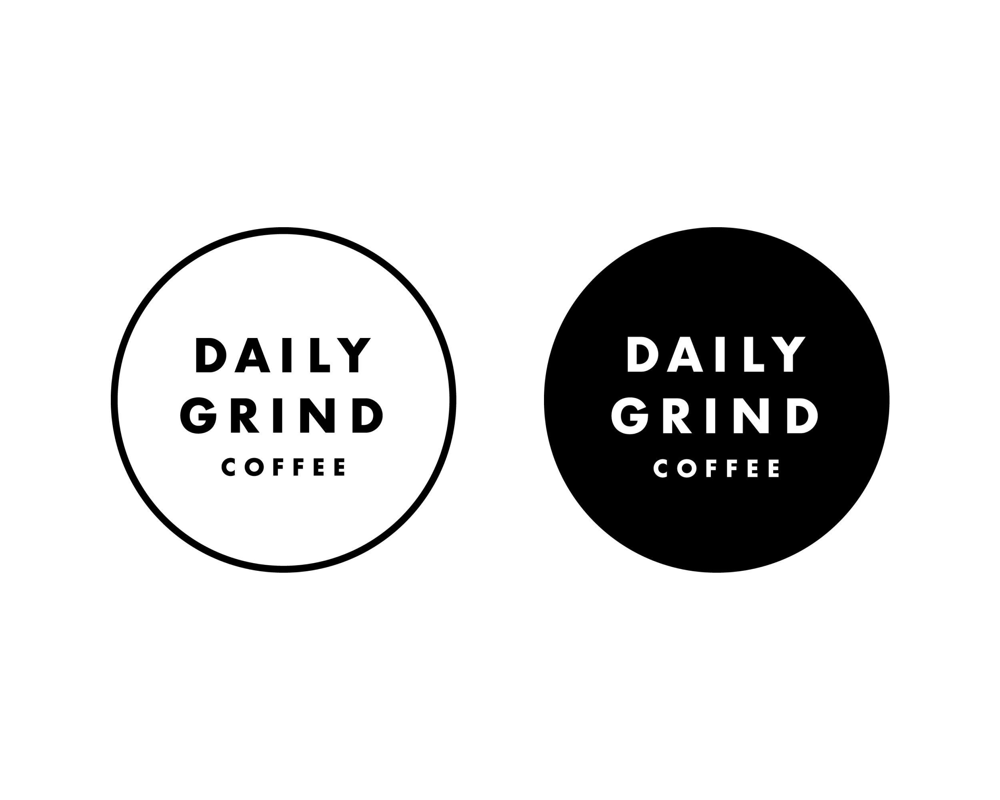

Context: Rebrand Daily Grind Coffee Shop
Timeline: Jan. 2016 - Aug. 2018
Tools: Wireframing, Photoshop, HTML, CSS
01 BACKGROUND
Daily Grind Coffee is a popular local coffee shop located in Winnipeg, Manitoba that serves a variety of drinks, sandwiches, and soups.
I was tasked with rebranding the business, building a company website and content management system for the owner.
Note: You can now see the website I designed and coded live at dailygrindcoffee.ca
02 DESIGN
Current trends for coffee shop websites were researched. A theme began to emerge, indicating that simplicity, elegance, and muted tones were preferred. Moving forward, this motivated the design decisions for both the company website and internal content management system.
Different logo iterations were created. The final two logos were chosen due to their simplicity, readability, and ease of use on physical products such as takeout coffee cups and containers. Having two options would allow for the designer to pick the appropriate one depending on its use case.

Photos of the coffee shop were taken, edited, and incorporated into the website to elicit a feeling of warmth and familiarity to the viewer. The menu was hardcoded to ensure usability for screen readers using HTML and CSS. CuteGrids, a responsive grid system, was also incorporated to enhance usability across different mobile devices.